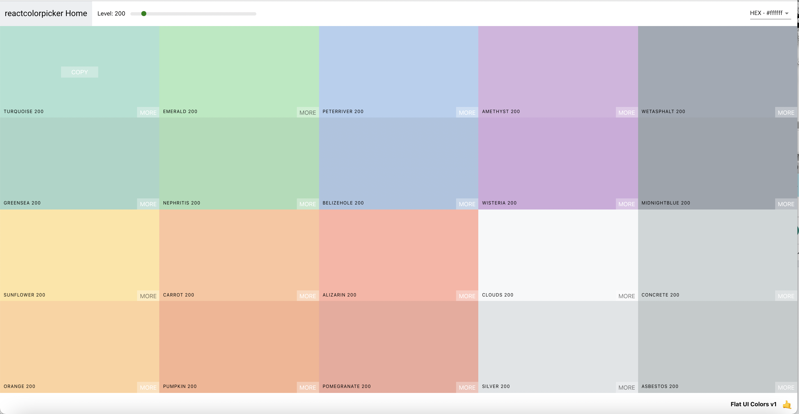
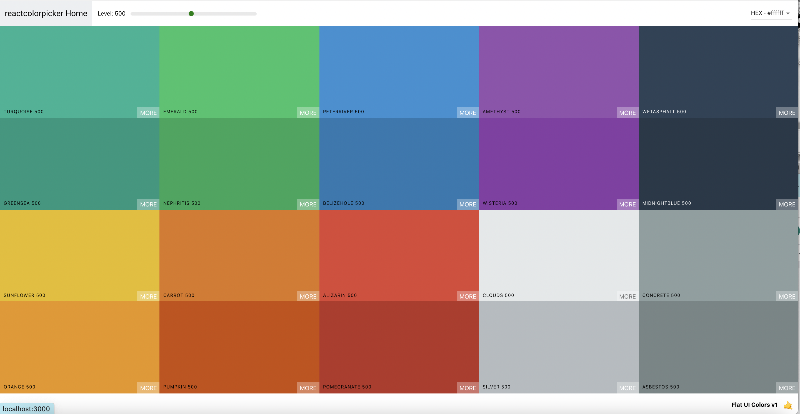
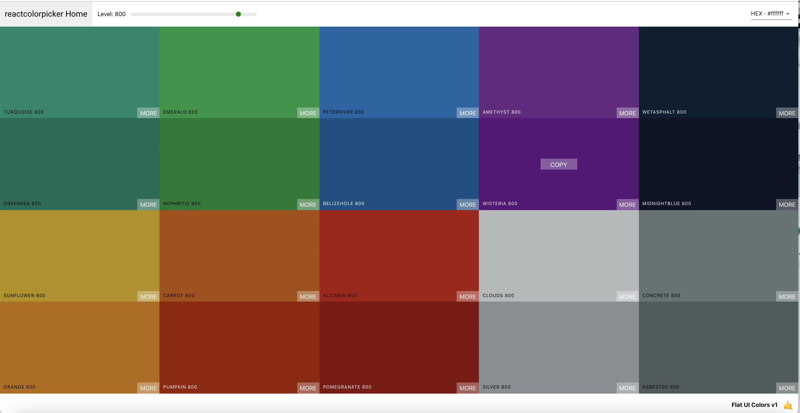
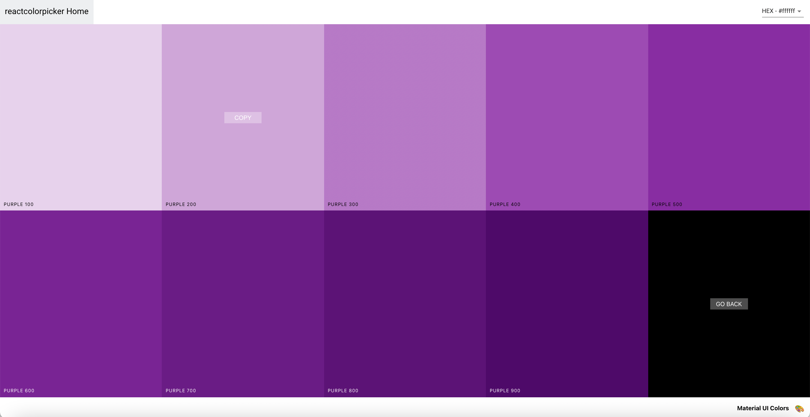
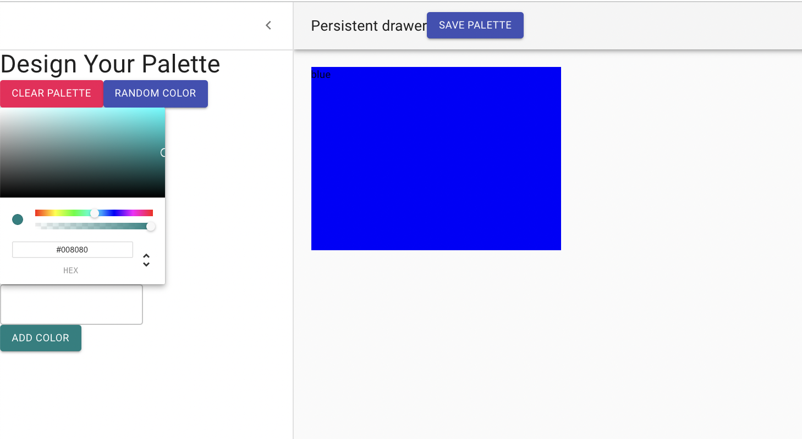

React Color App
Over winter break, I worked on a React Bootcamp from Udemy (The Modern React Bootcamp by Colt Steele) which involved an extensive color palette project that involved using libraries such as chrome picker, rc-slider, chroma js and material ui. I was able to learn a lot about parent and child components and using react-router as the project involved an information hierarchy of the palette list/home, a specific palette, color and shade. There was a lot of practice with state involved as there is a component to create a new palette by choosing a set of colors and being able to access the new palette through the palette list and colors through clicking on the palette. This involved passing many components such as the color boxes and shades. I am still working on finalizing this project, but here is the project demo. React Color App Demo
Information hierarchy
This figure shows some of the functions and render methods used to convey props and information like from the basic
Using chroma js and rc-slider
The chroma js library was used to get the hex, rgb and rgba values of the colors as well as convert the values when copying colors. It also provides a luminance value that allows the copy button and name of the colors to become darker or lighter depending on the shade of color it is associated with. This allows the user to still be able to see the value and button despite changing the shade of the palette to be darker or lighter. The rc-slider library was also incorporated to change the palette shade based on values incrementing by 100.
   Using Material UI
The library material ui was used for the color value snackbar on the top right, the persistent drawer, validation form and buttons in the palette creator. I enjoyed using material ui as the imported elements had different styles, such as the buttons, that could be implemented and the features were very intuitive. Many of the css files were also later refactored into a default { withStyles } export from material-ui/styles.
